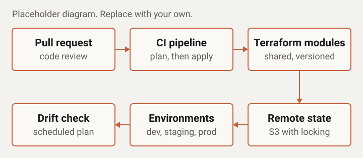

Case study
AWS Infrastructure Automation
Context
A SaaS client running its product on AWS. Infrastructure had been built by hand as the product grew, and the people who built it were also the ones shipping features.
Problem
New resources were provisioned manually, so every environment was slightly different. Changes that worked in staging could fail in production, and nobody could say with confidence what was actually running without checking the console.
What I did
- Brought existing AWS resources under Terraform so the code matched what was running.
- Wrote reusable Terraform modules for the core building blocks: networking, compute, data stores, and IAM.
- Set up dev, staging, and production from the same modules, with differences limited to per-environment variables.
- Moved state to a remote S3 backend with locking, keeping state separate for each environment.
- Integrated Terraform with CI/CD: plan on every pull request, apply after review and merge.
- Documented the module structure and the change process so the team could run it without me.
Architecture

Result
Provisioning became faster, environments became repeatable, and drift dropped because changes now went through code review.
- Time to provision a new environment: half a day before, 20 to 40 minutes after.
Stack used
- Terraform
- AWS
- S3 remote state
- IAM
- CI/CD